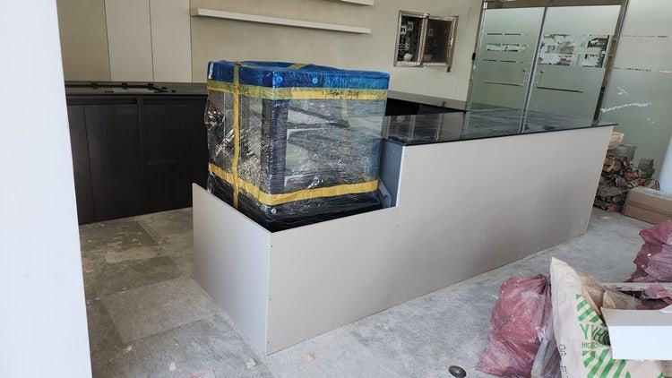
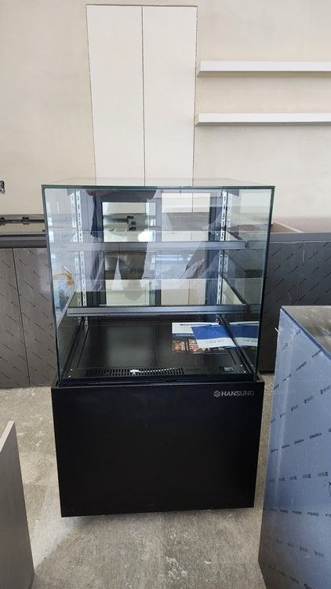
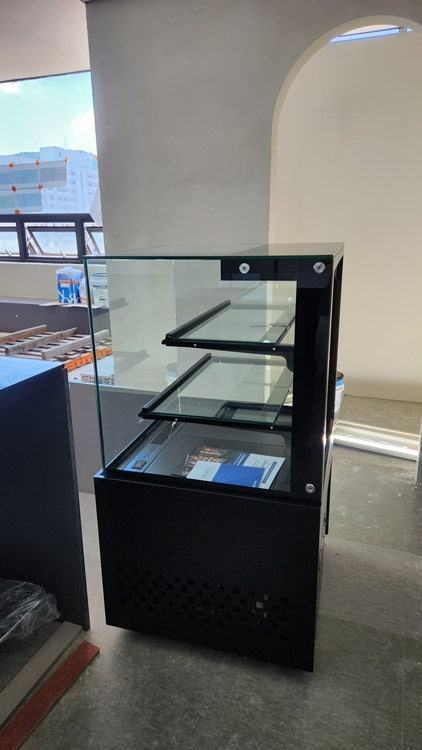
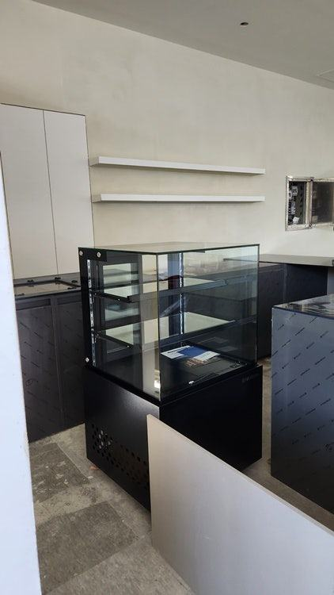
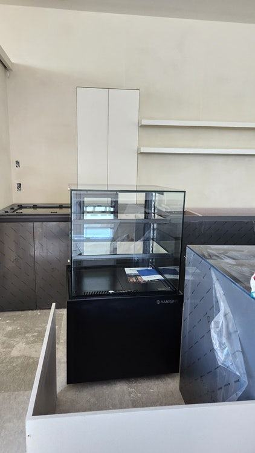
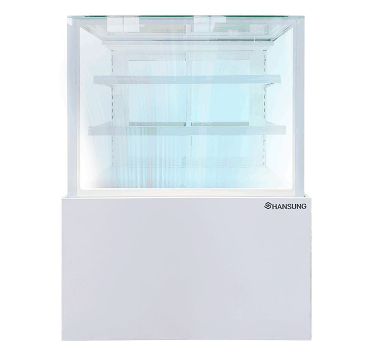

제과쇼케이스
제과쇼케이스 관리, 유리·선반·기계실 청소 순서

제과쇼케이스 관리는 매일 유리와 선반, 매주 배수구와 패킹, 정기적으로 기계실 응축기 순서로 나눠서 하면 됩니다. 영업 중에는 문을 열어 둔 채 작업하지 않고 디저트를 채울 때 한 번에 넣는 습관이 결로와 성에를 함께 줄여 줍니다.
안녕하세요. 카페와 베이커리 진열장을 직접 설계하고 제작하는 한성쇼케이스입니다.
제과쇼케이스는 매장에서 손님 눈에 가장 많이 띄는 장비입니다. 유리에 손자국 하나, 선반에 크림 자국 하나만 있어도 진열한 디저트가 덜 맛있어 보이죠.
그런데 바쁜 하루를 마치고 나면 어디부터 닦아야 할지, 기계 쪽은 언제 봐야 할지 막막하다는 사장님이 많습니다.
관리는 한 번에 몰아서 하기보다 매일, 매주, 정기로 나눠 두면 부담이 훨씬 덜합니다. 눈에 보이는 곳과 안 보이는 곳을 구분해 챙기는 게 요령입니다.
오늘은 제과쇼케이스를 오래 깨끗하게 쓰기 위한 관리 순서와, 영업 중 결로와 성에를 줄이는 습관을 정리해 드리겠습니다.
1. 매일: 유리와 선반
마감 후 디저트를 빼고 나면 먼저 선반에 떨어진 크림과 부스러기를 걷어 내세요. 크림이 굳으면 냄새가 배고, 다음 날 올리는 디저트에 옮겨 붙기 쉽습니다.
유리 선반은 부드러운 천과 중성 세제로 닦고, 물기를 남기지 않아야 얼룩이 생기지 않습니다.
손님 쪽 앞 유리는 손자국이 가장 많이 남는 곳입니다. 거친 수세미나 연마제가 든 세제는 유리 코팅에 흠을 낼 수 있으니 피하고, 유리 이음새는 힘을 주어 문지르지 마세요.
- 선반 크림·부스러기는 그날 걷어 내세요.
- 유리는 부드러운 천과 중성 세제로 닦으세요.
2. 매주: 배수구와 문 패킹
제과쇼케이스 바닥에는 제상수가 빠지는 배수구가 있습니다. 부스러기나 시럽이 들어가 막히면 물이 고이고 냄새가 납니다.
일주일에 한 번은 배수구 주변을 확인하고 막힌 곳이 없는지 살펴보세요.
뒷문 패킹에도 크림과 설탕이 끼기 쉽습니다. 패킹이 끈적이면 문이 꼭 닫히지 않아 냉기가 새고, 유리 안쪽에 김이 서리는 원인이 됩니다.
따뜻한 물수건으로 패킹 주름 사이를 닦아 주세요.


3. 정기: 기계실 응축기
기계실은 눈에 보이지 않아 가장 오래 방치되는 곳입니다. 응축기에 먼지가 쌓이면 열이 빠지지 못해 냉기가 약해지고 기계에 무리가 갑니다.
베이커리는 밀가루와 슈거파우더가 공기 중에 떠다니다 기계실로 빨려 들어가기 쉬우니 일반 매장보다 자주 확인하세요.
전원을 끈 뒤 흡입 그릴의 먼지를 솔로 털어 내고, 안쪽까지 먼지가 굳어 있으면 점검을 요청하는 것이 안전합니다.
- 청소 전 반드시 전원을 끄세요.
- 밀가루 작업대가 기계실 그릴 앞에 있지 않은지 보세요.
4. 영업 중 결로와 성에 줄이기
디저트를 채울 때 뒷문을 열어 둔 채 하나씩 옮기면 따뜻한 공기가 들어가 유리 안쪽에 김이 서리고 성에가 늘어납니다.
쟁반에 한 번에 담아 와서 빠르게 넣고 문을 닫는 순서를 지켜 주세요.
갓 구운 빵이나 따뜻한 디저트는 충분히 식힌 뒤 넣어야 합니다. 습한 날에는 매장 환기와 제습을 함께 신경 쓰시면 앞 유리 김이 훨씬 줄어듭니다.
관리 항목은 종이 한 장에 매일·매주·정기로 나눠 적고 쇼케이스 옆 직원 공간에 붙여 두세요. 누가 언제 했는지 체크만 해도 빠뜨리는 일이 줄고, 아르바이트생이 바뀌어도 같은 기준으로 관리할 수 있습니다.
기계실 청소 날짜를 적어 두면 A/S를 요청할 때도 도움이 됩니다.
체크리스트
- 매일: 선반 크림·부스러기, 유리 얼룩
- 매주: 배수구 막힘, 뒷문 패킹 끈적임
- 정기: 기계실 응축기 먼지
- 디저트는 쟁반째 한 번에 채우기
- 따뜻한 디저트는 식힌 뒤 진열
주방 상판 색에 맞춘 블랙 미니제과쇼케이스
디저트 매장 운영을 준비하시던 사장님과 상담한 사례입니다. 디저트는 맛만큼 겉모습이 중요해서 어떤 진열장에 담기느냐에 따라 보이는 인상이 달라지기 때문에, 사장님도 오래 고민하셨고 저희도 충분히 상담을 이어 갔습니다.
매장을 보니 주방 상판이 검은색 위주라 그에 어울리도록 검은색 테마의 미니제과쇼케이스를 권해 드렸고, 사장님도 마음에 들어 하셨습니다.
쇼케이스 설계를 오래 해 온 디자이너가 구성을 함께 잡았고, 제작 과정에서 119가지 품질 테스트를 거쳐 배송했습니다.
주방과 잘 어울리는 진열장 덕분에 매장이 한결 정돈돼 보였습니다.






자주 묻는 질문
제과쇼케이스 유리는 어떤 세제로 닦아야 하나요?
부드러운 천과 중성 세제를 권합니다. 연마제가 든 세제나 거친 수세미는 유리 표면에 흠을 낼 수 있으니 피해 주세요.
유리 안쪽에 김이 자주 서려요.
뒷문 패킹이 끈적여 문이 덜 닫히거나, 문을 열어 둔 채 진열하는 시간이 길 때 자주 생깁니다. 패킹 청소와 진열 습관을 바꿔도 계속되면 결로 방지 기능 점검을 받아 보세요.
기계 쪽 이상은 어디로 연락하나요?
대표전화 031-986-2458로 접수하시면 됩니다. 한성쇼케이스는 전국 240여 개 A/S 센터를 운영하고 있어 가까운 곳에서 대응합니다.
매장 조건에 맞춰 만드는 한성쇼케이스
원하시는 제품 사진과 설치할 공간 사진만 보내 주셔도 매장에 맞는 구성을 추천해 드립니다.
- 전국 240여 개 A/S 전담 센터 운영
- 본사 대량 자재 매입으로 품질 대비 합리적인 가격
- 유럽제·삼성 냉각 콤프레셔 적용
- 국내 최초 쇼케이스 전문 디자이너 상주
매장 폭과 원하는 진열 구성을 알려 주세요. 실측과 견적을 안내해 드립니다.
031-986-2458